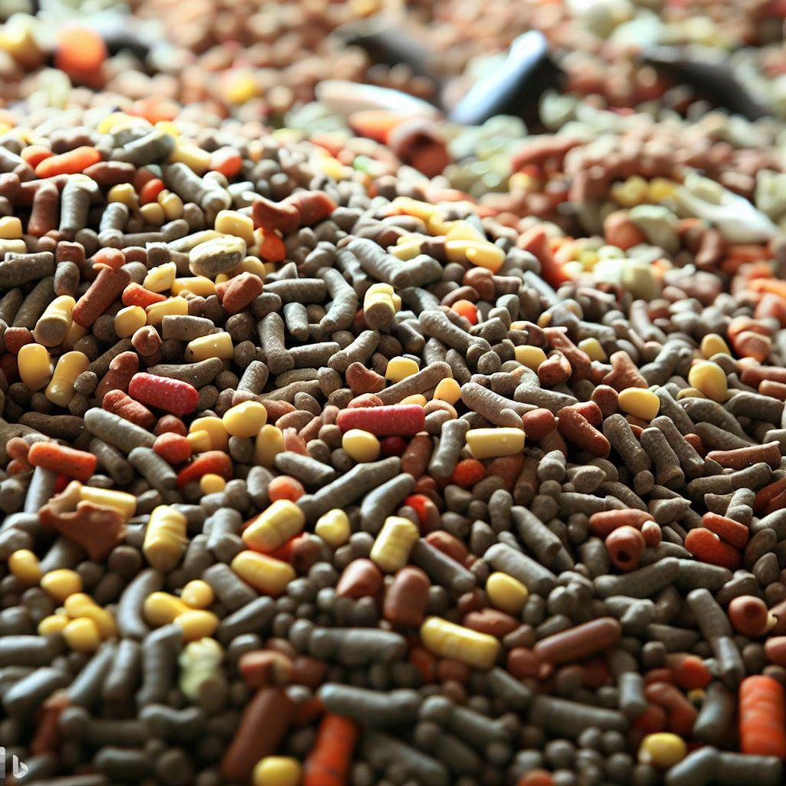

The importance of animal feeding
Written by: Zgjim Topojani 10:09 PM 30.05.2023 GMT+2
Animal feeding is an important aspect of animal husbandry and human health. It involves providing animals with food that meets their nutritional needs and prevents diseases. Animal feed can be classified into two types: fodder and forage. Fodder is food that is given to animals by humans, such as hay, silage, pellets, oils, and mixed rations. Forage is food that animals find and eat by themselves, such as grass, crop residues, and legumes.
The quality and quantity of animal feed can affect the health and productivity of animals, as well as the safety and quality of animal products that humans consume. Animal feed should contain six essential nutrients: water, carbohydrates, proteins, fats, minerals, and vitamins. These nutrients perform various functions in the body of animals, such as regulating digestion, providing energy, boosting metabolism, producing body heat, supporting milk production, and preventing deficiencies.
Animal feed can also be a source of contamination and risk for both animals and humans. Feed can be contaminated by microorganisms, toxins, pesticides, heavy metals, hormones, antibiotics, and other substances that can harm the health of animals and humans who consume their products. Therefore, animal feed should be produced, stored, transported, and used in a safe and hygienic manner. Codex Alimentarius has developed guidelines and standards for good animal feeding practices and risk assessment for feed.
Animal feeding is not only a practical activity but also a cultural and ethical one. Humans have been sharing food with animals for centuries, sometimes for religious reasons, sometimes for emotional reasons, sometimes for ecological reasons. Feeding animals can create bonds between humans and animals, but it can also have negative impacts on the environment and biodiversity. Feeding animals can also influence their behavior, physiology, genetics, and evolution. For example, feeding street dogs can increase their population size and survival rate. Feeding wild animals can make them dependent on humans and lose their natural instincts.